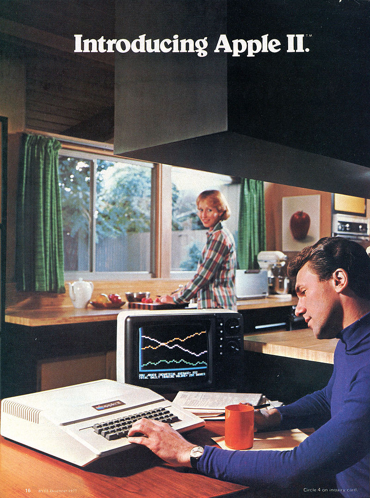

Are you ready?
The Apple II is an 8-bit home computer and one of the world's first highly successful mass-produced microcomputer products.
The Apple II is an 8-bit home computer and one of the world's first highly successful mass-produced microcomputer products.